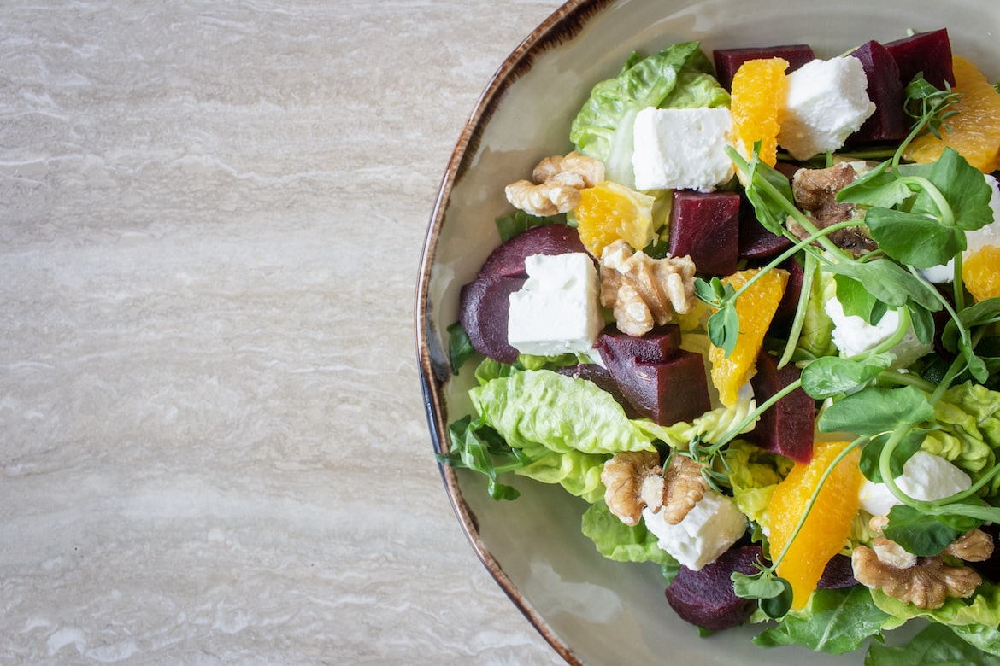
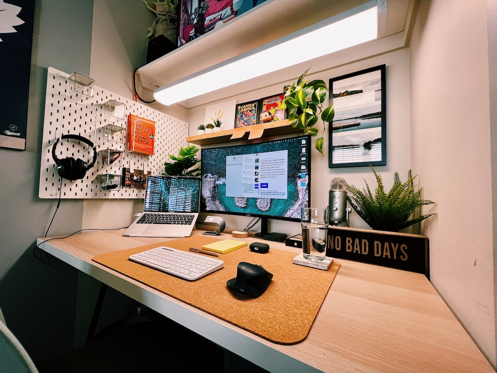

How to develop a positive affirmation practice
Monday, 17 Oct 2022
Affirmations can be an incredible resource for cultivating more self-love and fostering resilience. Laia shares how to develop your own daily practice...

How to make your own chai spice mix and nut milk chai
Monday, 17 Oct 2022
Make your own chai spice mix for a creamy and comforting vegan drink to enjoy all day, all year without any hidden additives and sugars.

How to Become a More Productive Blogger in 10 Easy Steps
Monday, 17 Oct 2022
I’m living proof that you can grow your business and personal brand just by writing. As Andrew Chen recently tweeted, ...